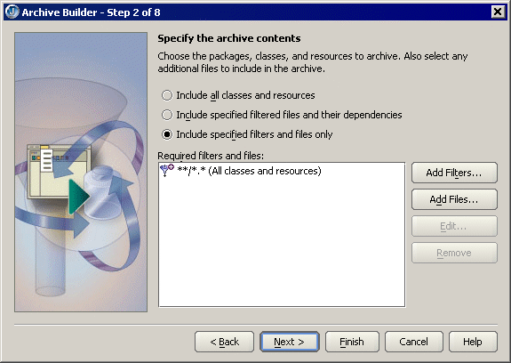
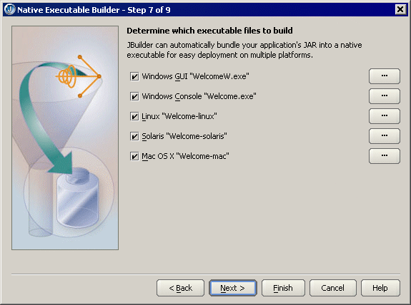
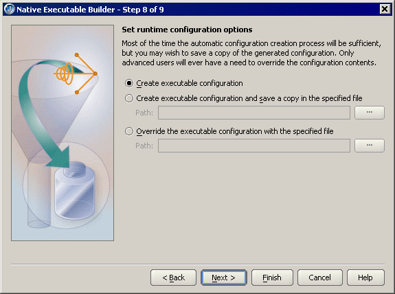

The Archive Builder simplifies deployment of your application by bundling together a set of files and packages into an archive file that constitutes an image of your application which can be run. You can create a variety of archives, such as applet, application, J2EE application client, executable JAR, documentation, source, mobile, and Web Start application JAR archive files. To open an Archive Builder, choose File|New, select the Archive page and double-click the icon for the type of archive you want to make..

The Native Executable Builder automatically bundles your application JAR file with native executable wrappers for Windows, Linux, Solaris, and Mac OS X. To open the Native Executable Builder, choose File|New|Build|Native Executable Builder. Some of the archive types in the Archive Builder also provide this feature, such as the Application and Native Executable archive types.

If you're creating an executable JAR with the Archive Builder or a native executable with the Native Executable Builder, you can set runtime configurations to launch the executable. If you want to customize the executable configuration, you can modify the configuration that JBuilder creates or create your own configuration.

For more information, see:
Building Applications with JBuilder: Deploying Java programs
Building Applications with JBuilder: Adding unrecognized file types as generic resource files
Building Applications with JBuilder: Using the Archive Builder
Building Applications with JBuilder: Creating executables with the Native Executable Builder
Building Applications with JBuilder: Customizing executable configuration files